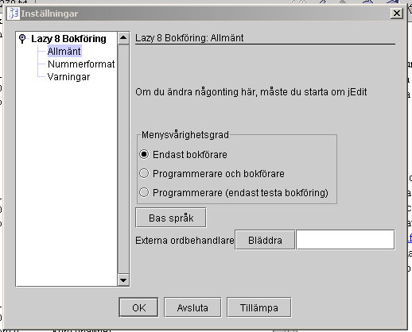

|
|
För att komma till Inställningsfönstret välj meny Verktyg->Inställningar

Här gör du inställningar för hur hela programmet beter sig. Du måste klicka på alla rader i den vänster kolumnen för att kunna se alla inställningar
Allmänt
Menysvårighetsgrad
Vilken typ av användare är du? Denna information används för att ändra på jEdits miljö. Om du väljer 'Endast Bokföring' kommer jEdit att ändras så att jEdit kan avändas endast till bokföring. Det är viktig att du väljer detta om du inte är en programerare. Om du är en programerare och ska använda bokföring mycket, välj Programerare bokförare för att ändra jEdit så att du kan bokföra lättare. Välj Programerare om du inte vill ändra på jEdits miljö..
Bas språk
Tryck på knappen för att ändra på vilket språk som ska visas i hela programmet. Det är bara engelska och svenska som finns tillgängligt idag. Du måste starta om programmet innan just denna ändring ska fullbordas.
Externa Ordbehandlare
Den interna ordbehandlaren är mycket begränsad men används konstant. Här kan du välja din egen ordbehandlare istället. Skriv sökvägen till din ordbehandlare i ruttan eller tryk på BLÄDDRA och hitta ditt program. Din ordbehandlare måste kunna använda Rich Text Format (RTF); de flesta kan. Den följande är exemplar till kända ordbehandlingsprogram
Operativ systemet
Program
Sökvägen
Windows
Write or Wordpad
Write
Windows
Microsoft word
C:\program files\microsoft office\office\winword
Bläddra
Om du slår denna knapp, får du en dialog som hjälper dig att hitta din ordbehandlare.Nummerformat
Rapport nummerformat
Rapport vänster justera
Vänster justera numrerna i ett fält eller en kolumnRapport höger justera
Höger justera numrerna i ett fält eller en kolumnRapport - OS System standard nummer
Detta format är bra fast det saknas kontroll över decimaltecknen. Dvs om du använder decimaler i ditt system, kommer decimal tecken inte att hamna direkt över varandra i en kolumn. Om du använder decimaler bör du välja Special format.Rapport - OS System standard valuta
Detta format kommer antingen ifrån ditt operativsystem eller java systemet beroende på land och språk. Detta format har fantastiskt kontrol över decimaler fast ett valuta tecken följer varje nummer. Detta är oftast för mycket så detta format är inte så interessant.Rapport - Special format
Om du välje detta format, måste du mata in den följande eget eller förvald nummerformat.Rapport - Special format inmattning
Det är bäst att du välje ett av de förvalda formaten eftersom ett format systemet är väldigt komplex. Men om du vill mata in ditt eget format, kan du få råd från den följande länken till nummerformat (engelska).Nummerinmatnings format
Nummerinmatning vänster justera
Vänsterjusterar numrena i ett fält eller en kolumnNummerinmatning höger justera
Högerjusterar numrena i ett fält eller en kolumnNummerinmatning - OS System standard nummer
Detta format är bra och enkelt fast det saknas kontroll över decimaltecknen. Dvs om du använder decimaler i ditt system, kommer decimaltecknen inte att hamna direkt över varandra i en kolumn. Om du använder decimaler och inte kan stå ut med att decimalerna är oordnade, borde du välja Special format. Men kom ihåg att detta bara är för nummerinmatning så oordnade decimaler är inte så farligt.Nummerinmatning - Special format
Om du välje detta format, måste du mata in den följande eget eller förvald nummerformat.Nummerinmatning - Special format inmattning
Det är bäst att du välje en av de förvalda formaten eftersom formatsystemet är väldigt komplex. Men om du vill mata in ditt eget format, kan du få råd från den följande länken till nummerformat (engelska).Varningar
Tillåta ändringar i verifikationer
Vill du göra ändringar i verifikationer? I de flesta länder förbjuder lagen att man göra ändringar i yrkesmässig bokföring. Men, sådana stränga regler behövs inte i amatörmässig bokföring. Om du är osäker, välj tillåta ändringar. Detta val får inte ändras efter den första uppstarten.Kräva lösenord vid uppstart
Detta val får inte ändras efter den första uppstarten. Om denna är ikrysad, måste du mata in ditt användarnamn och lösenord varje gång du startar detta program. Dessutom, om du glömmer ditt användarnamn eller lösenord kan du inte se dina data igen.Konfirmera efter uppdateringar
Du kommer att få ett meddelande varje gång en post uppdateras. Detta innebär att du är säker på att din information kom in i databasen.Konfirmera innan posten raderas
Du kommer att få en fråga 'Är du säker på att du vill ta bort....' varje gång du suddar ut en post.Tabstopp på kunden i verifikationsinmatning
I verifikationsinmatningsfönstret finns ett fält för kundnummer. Om detta är ikryssat kommer skrivmarkören att stanna vid kundnummerfältet för varje post du matar in. Normalt behövs inte denna och den är även irriterande. Men om du måste ange ett kundnummer i varje post, är det nödvändigt.Konfirmera efter att posten raderats
Du kommer att få ett meddelande varje gång en post suddas ut. Detta innebär att du är säker på att din information tas bort ifrån databasen.Tömma skärmen efter uppdatering
Detta är normalt det bästa sättet att jobba på. Men om du matar in samma sak hela tiden kan det vara bra att ha en post kvar efter att du har matat in det så att du, med minimalla ändringar, kan mata in en post till.Tömma skärmen efter att posten raderas
Detta är normalt det bästa sättet att jobba på. Men du kanske vill se vad du har tagit bort och då ska du inte kryssa i här.Visa fält hjälp
Här kan du kan få hjälp i 'InfoViewer' fönstret för varje fält som musen passerar över. Efter att du har lärt dig programmet är detta inte nödvändigt och även irriterande.Varna när man ska spara databasen.
Denna ska varna dig varje gång du stängar av datorn att du måste spara databasen.Kräva krypterat sparade databaser
Om du kryssar i denna, kommer alla dina sparade databaser fortsättningsvis att krypteras. D.v.s., du måste ange ett lösenord som används för att kryptera databasen. Även när du försöker att återskapa databaser, kan du endast återskapa databaser som är krypterade och då måste du ange rätt lösenord. Denna är bra för er som behöver hålla all information konfidentiell och speciellt om du måste flytta databasen över internet. För att förklara vilken typ av kryptering som används, kommer en beskrivning nedan på engelska (jag skulle aldrig kunna översätta den).
PBEWithMD5AndDES: The password-based encryption algorithm as defined in: RSA Laboratories, "PKCS #5: Password-Based Encryption Standard," version 1.5, Nov 1993. Note that this algorithm implies CBC as the cipher mode and PKCS5Padding as the padding scheme and cannot be used with any other cipher modes or padding schemes.Tillåta att byta bolag i alla fönster
Om detta ej är ikryssat, blir det omöjligt att välja något annat bolag än bolaget som du valde när du startade programmet. Om detta är ikryssat är det fritt fram att välja vilket bolag som helst i alla fönster.Knapper
Ok
Trycka på detta för att godkänna alla ändringarTillämpa
Saksamma som OK förutom att med OK försvinnar skärmen..Avsluta
Trycka på detta för att avbryt alla ändringar.
|
|
Copyright 2002 Lazy Eight Data HB